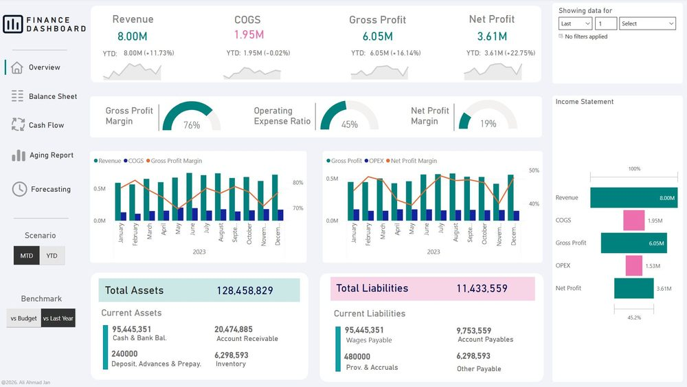
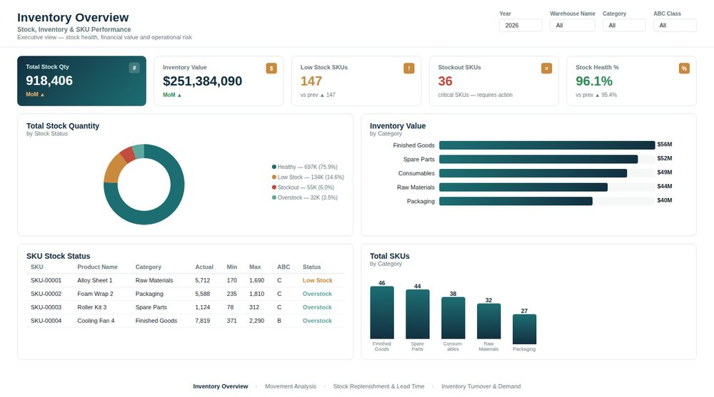
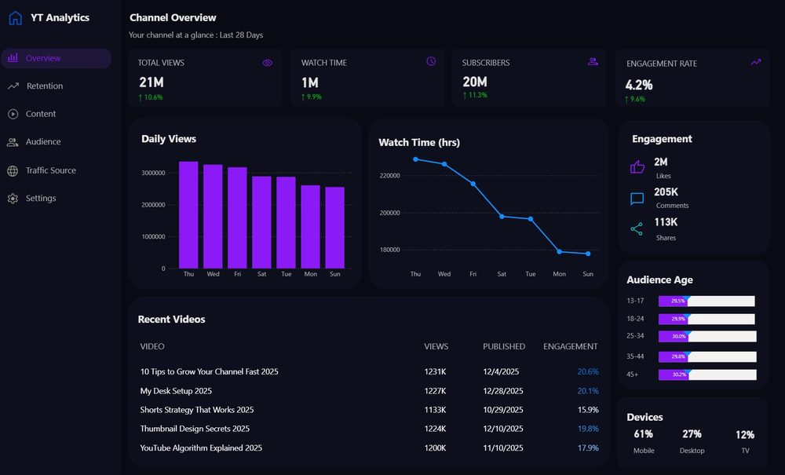
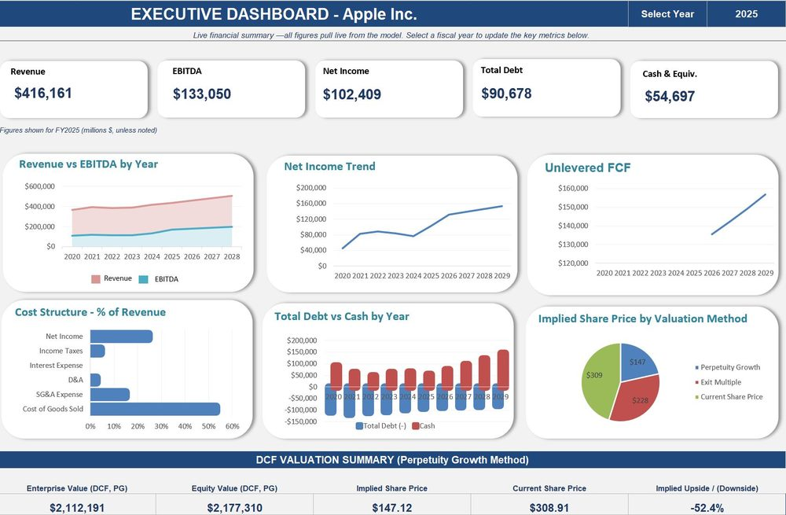
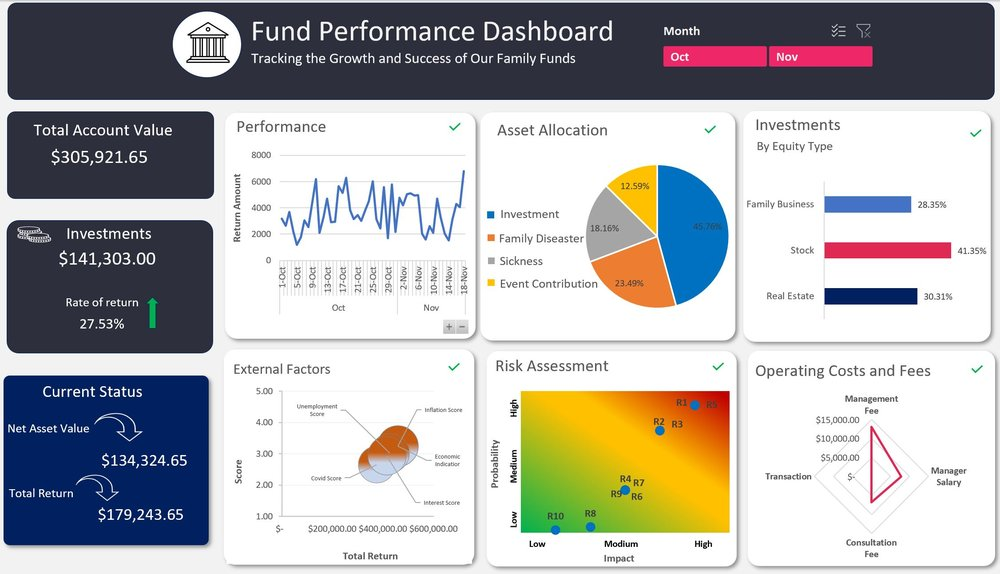

01
Business Dashboards
Power BI, Looker Studio and Excel dashboards that turn raw numbers into a clear view of what is happening.
Quantum Spectra helps small businesses connect their data, automate reporting, build clear dashboards, and use AI where it can actually save time.
We work with the tools you already use, then build the layer that makes them work better together.
Power BI, Looker Studio and Excel dashboards that turn raw numbers into a clear view of what is happening.
Replace repetitive exports, copy-paste work and fragile spreadsheets with automated data flows and scheduled reporting.
Bring Google Ads, GA4, Search Console and lead data together to understand what drives spend, leads and revenue.
Add an AI layer that can answer business questions, investigate anomalies and surface insights from your data.
We can bring together the spreadsheets, ad platforms, CRMs, APIs and databases already running your business.
Tell us what you use →A few examples of the type of business reporting and automation Quantum Spectra can build.

Built a multi-page Power BI finance dashboard covering P&L, balance sheet, cash flow and aging, with scenario toggles and benchmarking built in.
Open the dashboard ↗
Executive Power BI dashboard tracking stock health, turnover, replenishment and demand fulfillment across ERP and WMS data, cutting manual stock reviews.
Open the dashboard ↗
Power BI dashboard pulling YouTube Analytics data into a single view of views, watch time, engagement, retention and audience demographics.

Integrated financial model with a 3-statement build, debt and working capital schedules, DCF and comparable company analysis, and an executive dashboard.
View the model ↗Connected Google Ads and Search Console data into Looker Studio, with an AI-assisted analysis layer for account reviews.
View live report ↗A consolidated operations spreadsheet system bringing sales, ops and finance tracking into one connected, always-current command center.
View the spreadsheet ↗
Interactive Excel dashboard tracking account value, returns, asset allocation, risk and operating costs for a multi-fund portfolio, with month filters to compare periods.
Open the live dashboard ↗Have another Looker Studio report in mind? Here's a second live marketing report ↗
No giant implementation project. We start with the business question, then build only what solves it.
We map your reporting pain points, data sources and the decisions you need to make.
We bring the relevant sources together and clean the data so the numbers can be trusted.
We create the dashboard, automated workflow or AI layer around the real business use case.
We refine the system based on usage, add useful automation, and leave you with something maintainable.
Quantum Spectra helps small and growing businesses get more value from the data they already collect. The focus is simple: make reporting reliable, make performance visible, and automate the parts that should not require a person every week.
Our work spans business intelligence, marketing analytics, data integrations, reporting automation and AI-assisted analysis.
Founded by Ali Ahmed Jan — Data Analyst & BI Consultant and Top Rated freelance Data & AI Consultant with a 100% Job Success Score across 130+ client engagements.
"Ali did a great job with our Google Ads reporting, analysis, and automation. He also built an AI-assisted setup to analyze our campaign data more efficiently. He was responsive, technically strong, and I'd definitely work with him again."
"I hired Ali to help curate raw data from a given dataset and generate a report based on a specific outline. He has been an incredible asset — consistently delivering high-quality work and going above and beyond expectations. Ali is highly accommodating, always attentive to both my needs and those of my stakeholders. I highly recommend him."
Usually not. We prefer to work with the tools your business already uses and add only what is genuinely needed.
Yes. That is one of the most useful starting points. We can map the current process and identify what can be automated safely.
We start by understanding your current process and requirements, review the available data, build the solution, demonstrate it to you, make the necessary revisions, and provide a clear handover.
It depends on the scope. Smaller dashboard, reporting and automation tasks can often be completed within days, while larger integrations and business intelligence projects may take several weeks.
We use the access and permissions required for the project and follow a least-access approach wherever possible. We can also work within your existing security, privacy and NDA requirements.
Yes. We can connect advertising platforms, analytics tools, CRMs, databases, spreadsheets and APIs to bring your data together.
Yes. We can work with existing spreadsheets, databases, cloud platforms, APIs and business software without requiring you to rebuild everything from scratch.
Yes. We can help with maintenance, improvements, new data sources, reporting changes and ongoing automation as your business evolves.
Yes. Projects can be handled remotely, with clear requirements, demos, documentation and direct communication throughout the process.
Tell us what you are currently doing manually, where your data lives, or what you wish you could see in one place.